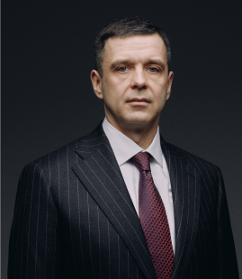

Московская коллегия адвокатов
«Демидов и партнеры»
«Демидов и партнеры»
Единственная форма нашего капитала – репутация

или
позвонить по номеру
+ 7 (495) 790-00-15
О коллегии
Партнеры коллегии являются опытными экспертами в области уголовного права, в частности осуществляют защиту бизнеса, защиту по уголовным делам экономической и коррупционной направленности, должностным преступлениям.
Занимаются вопросами корпоративного, семейного, наследственного права, права интеллектуальной собственности. Сопровождают бизнес, представляя интересы Доверителе в переговорах, реализуя поставленные задачи до судебной компетенции, но и в судах Москвы и других субъектов РФ.
Наша коллегия имеет репутацию надежного и ответственного юридического партнера, достигающего высочайшего успеха в оказании юридической помощи, отдавая преимущество не количеству проектов, а их исключительному качеству.
Ресурс не содержит в себе наличие и количество успешно оконченных проектов, оценок и отзывов третьих лиц о нашей работе, сведений о Доверителях, чьи интересы представляются партнерами Коллегии, поскольку обратное является прямым запретом, предусмотренным Кодексом профессиональной этики адвоката.
Анастасия Цветкова
Председатель МКА «Демидов и партнеры», учредитель, руководитель гражданской практики, адвокат по гражданским делам
Евгений Макаров
Партнер МКА «Демидов и партнеры», руководитель арбитражной практики, юрист по гражданским делам (частное право).
Марина Кельбах
Председатель МКА «Демидов и партнеры», учредитель, руководитель гражданской практики, адвокат по гражданским делам
Евгений Ларченко
Председатель МКА «Демидов и партнеры», учредитель, руководитель гражданской практики, адвокат по гражданским делам
Екатерина Ярышева
Председатель МКА «Демидов и партнеры», учредитель, руководитель гражданской практики, адвокат по гражданским делам
Дина Ибрагимова
Председатель МКА «Демидов и партнеры», учредитель, руководитель гражданской практики, адвокат по гражданским делам
Валерия Болфа
Председатель МКА «Демидов и партнеры», учредитель, руководитель гражданской практики, адвокат по гражданским делам
Анастасия Багаева
Партнер МКА «Демидов и партнеры», юрист по спорам, связанным с интеллектуальной собственностью

Эдуард Демидов
Председатель МКА «Демидов и партнеры», учредитель, руководитель гражданской практики, адвокат по гражданским делам
Состоит в реестре адвокатов Адвокатской палаты г. Москвы, р/н 77/16329
Окончил Всероссийский государственный университет юстиции, имеет дипломы бакалавра по программе высшего профессионального образования «Юриспруденция» и магистра по программе «Юрист в сфере предупреждения экономических преступлений и преступлений в области государственной и муниципальной службы».
Опыт работы по гражданскому направлению 10 лет.
Свое становление в профессии адвокат Эдуард Демидов начал с должности помощника адвоката, впоследствии был трудоустроен на должность секретаря суда/помощника судьи в суд общей юрисдикции. Именно работа в судебном органе позволили Эдуарду Демидову реализовать свой опыт и свои знания в адвокатуре, успешно представляя интересы граждан и организаций.
Эдуард Демидов ведет активную социальную деятельность, является экспертом научно-практического издания Федеральной палаты адвокатов РФ «Адвокатская газета», спикером на федеральном телевидении и радиовещании РФ, публикуется в печатных издательствах. Автор нескольких социально-правовых каналов в сети Интернет, направленных на правовое просвещение населения на некоммерческой основе. Принимает участие в юридических форумах, занимается проведением публичных лекций и мастер-классов, выступая на различных мероприятиях, посвященных юриспруденции.
Специализация:
- семейные споры (экспертный анализ и правовое сопровождение супругов в спорах о разделе совместно нажитого имущества во вне судебной и судебной компетенции, разрешение алиментных обязательств, определение места жительства детей, порядка общения с ними, лишение и ограничение родительских прав, установление и оспаривание отцовства, оспаривание брачных договоров, завещаний по Москве и другим субъектам РФ);
- наследственные споры (представление интересов граждан в судах общей юрисдикции, открытие и ведение наследственных дел в нотариальных конторах по Москве и другим субъектам РФ);
- общегражданские производства (возмещение имущественного ущерба, заемные отношения, неосновательное обогащение, оспаривание сделок и признание их недействительными и др.);
- арбитражная практика (представление интересов предпринимателей и организаций в арбитражных судах Москвы, других субъектов РФ, сопровождение бизнеса, деловые переговоры).
Анастасия Цветкова
Партнер МКА «Демидов и партнеры», руководитель уголовной практики, адвокат по уголовным делам
Состоит в реестре адвокатов Адвокатской палаты г. Москвы, р/н 77/8835
Окончила Московский государственный юридический университет имени О.Е Кутафина (МГЮА)
Опыт работы по уголовному направлению 27 лет.
Свое становление в уголовном направлении адвокат Анастасия Цветкова начала с должности помощника межрайонного прокурора. Впоследствии была назначена на должность прокурора управления прокуратуры г. Москвы.
Получив колоссальный опыт, длительный период работая в надзорных ведомствах с целью профессионального развития, получила статус федерального судьи, осуществляла правосудие, рассматривая дела не только уголовной направленности, но и общегражданские в суде общей юрисдикции.
Именно работа в прокурорских структурах, а также в судейском сообществе позволила Анастасии Цветковой изучить систему уголовного преследования изнутри, что обуславливает выстраивание правильной тактики поведения адвоката на всех стадиях уголовного процесса и позволяют реализовать свой непомерный опыт и свои глубочайшие знания в адвокатуре, защищая граждан и организации.
Анастасия Цветкова занимается общественной деятельностью, выступает спикером на федеральном телевидении, публикуется в печатных издательствах, принимает участие в юридических форумах.
Специализация:
- уголовная практика (защита по тяжким и особо тяжким составам экономических преступлений, преступлений против личности и по уголовным делам с участием присяжных заседателей, в том числе имеющих повышенный резонанс)
Евгений Макаров
Партнер МКА «Демидов и партнеры», руководитель арбитражной практики, юрист по гражданским делам (частное право).
Окончил Московский Государственный Университет Геодезии и Картографии по специальности юриспруденция.
Регулярно проходит курсы повышения квалификации в LF ACADEMY.
Юридическую практику в цивилистике начал более 10 лет назад.
Ведет дела различной сложности в системе Арбитражных судов Российской Федерации по всей стране, в том числе в рамках дел о банкротстве.
Специализация:
- арбитражная практика (представление интересов предпринимателей и организаций в арбитражных судах Москвы, других субъектов РФ, сопровождение бизнеса, деловые переговоры). Ведение дел различной сложности: от взыскания дебиторской задолженности до защиты в порядке 115-ФЗ, банкротства и пр.;
- общегражданские производства (возмещение имущественного ущерба, заемные отношения, неосновательное обогащение, оспаривание сделок и признание их недействительными и др.).
Марина Кельбах
Партнер МКА «Демидов и партнеры», адвокат по гражданским делам
Состоит в реестре адвокатов Адвокатской палаты Московской области, р/н 50/10538
Окончила Российский государственный университет правосудия с отличием, имеет диплом специалиста по программе высшего профессионального образования «Юриспруденция».
Опыт работы по гражданскому направлению 7 лет.
Свое становление в профессии адвокат Марина Кельбах начала с должности помощника федерального судьи в суде общей юрисдикции, затем осуществляла деятельность в крупных адвокатских образованиях, занималась защитой интересов публичных лиц, участвовала в делах, имеющих повышенный общественный резонанс.
Марина Кельбах занимается общественной деятельностью, выступает спикером на федеральном телевидении и радиовещании РФ, публикуется в печатных издательствах; является автором нескольких социально-правовых каналов в сети Интернет, направленных на правовое просвещение населения принимает участие в юридических форумах, занимается проведением публичных лекций и мастер-классов.
Специализация:
- семейные споры (представление интересов супругов при разрешении семейных споров, в том числе во вне судебном и судебном порядке, представление интересов родителей/законных представителей и детей в государственных и судных органах);
- споры, связанные, с прохождением службы в вооруженных силах РФ (представление интересов военнослужащих по контракту, лиц, призываемых на срочную службу, на службу по мобилизации);
- защита репутации физических и юридических лиц (разрешение споров физических и юридических лиц, связанных с распространением недостоверной и порочащей информации на сайтах и в СМИ, ее удаление из открытых источников, размещение опровержения);
- общегражданские споры (досудебное урегулирование гражданских споров и представление интересов в судах по различным категориям дел: возмещение ущерба, взыскание долговых обязательств, разрешение спора, вытекающих из договорных отношений, установление фактов, имеющих юридическое значение).
Евгений Ларченко
Партнер МКА «Демидов и партнеры», адвокат по уголовным делам
Состоит в реестре адвокатов Адвокатской палаты г. Москвы, р/н 77/14640
С отличием окончил Санкт-Петербургский университет МВД России.
Опыт работы по уголовному направлению 20 лет.
Осуществлял деятельность в Следственном Комитете при прокуратуре РФ, где последовательно занимал должности: старшего следователя, следователя по особо важным делам, а затем и следователя по особо важным делам отдела по расследованию особо важных дел Следственного управления Следственного комитета.
Впоследствии работал в прокуратуре РФ, где занимал должности помощника прокурора, прокурора отдела по надзору за процессуальной и оперативно-розыскной деятельностью органов внутренних дел и таможни, заместителя прокурора района в структуре межрегиональной транспортной прокуратуры.
Евгений Ларченко имеет обширный опыт в расследовании уголовных дел о преступлениях различных категорий и разной направленности, в надзоре за расследованием уголовных дел, а также за оперативно-розыскной деятельностью и широкую практику участия в рассмотрении судами уголовных, административных, арбитражных и иных дел.
Опыт, приобретенный во время работы в правоохранительной системе, а также адвокатом, позволяют Евгению Ларченко правильно применять уголовное законодательство, основанное на знании и понимании принципов и методов осуществления уголовного преследования для защиты прав и законных интересов своих доверителей на досудебных и судебных стадиях разбирательств.
За время работы в органах МВД, Следственного Комитета, Прокуратуры РФ Евгений Ларченко изучил систему уголовного преследования изнутри, что обуславливает выстраивание правильной тактики поведения адвоката на всех стадиях уголовного процесса.
Специализация:
- уголовная практика (защита по экономическим, коррупционным и налоговым преступлениям. Защита бизнеса, правовое сопровождение)
Екатерина Ярышева
Партнер МКА «Демидов и партнеры», юрист по интеллектуальным, семейным, имущественным спорам.
Окончила «Северо-Кавказский Федеральный университет» (СКФУ) с присвоением квалификации – юрист.
Опыт работы по гражданскому направлению 11 лет.
Свое становление в профессии Екатерина Ярышева начала с должности секретаря судебного заседания, в последующем осуществляла трудовую деятельность юристом в Департаменте имущественных отношений Министерства обороны Российской Федерации, в организациях системы Министерства обороны Российской Федерации, по защите федерального имущества, правовой экспертизы госконтрактов, гособоронзаказов, договорной и судебной защиты федеральных объектов недвижимости, в том числе инвестиционные контракты, а также защита товарного знака и разработка лицензионных договоров.
Сегодня Екатерина Ярышева ведет частную юридическую практику.
Специализация:
- защита интеллектуальной собственности: регистрация товарных знаков и других средств индивидуализации; депонирование; работа с договорами авторского заказа и лицензионными; получение патентов и разрешение патентных споров; работа с произведениями искусства, музыки и кино; правовой аудит; защита информационных продуктов бизнеса;
- имущественные споры: разработка договоров (изменение/ расторжение) взыскание задолженности и взыскание штрафной неустойки, земельные правоотношения, правовое сопровождение сделок с недвижимостью, в тендерах, экспертиза госконтрактов, мировых соглашений, оспаривание сделок;
- семейные споры: взыскание алиментов, индексация, неустойка; раздел общего имущества супругов, урегулирование споров о детях (определение места жительства ребенка и/или порядок его общения с родителем после расторжения брака), составление/признание недействительным брачного договора.
- сопровождение в переговорах, помощь при обжаловании решений государственных органов, представительство в частных и государственных структурах, представительство в судах РФ.
Дина Ибрагимова
Партнер МКА «Демидов и партнеры», юрист по гражданским делам, налоговый консультант.
Окончила «Российскую академию правосудия» (Российский государственный университет правосудия) с присвоением квалификации юрист.
Опыт работы по гражданскому направлению 13 лет. Налоговое консультирование 15 лет.
Юридическую практику начинала в юридическом отделе налоговой инспекции, затем осуществляла деятельность главного юриста в крупной компании, реализующей дорожно-строительную технику. Организовала работу юридического отдела в сервисно-визовых центрах на территории РФ.
Сегодня Дина Ибрагимова взаимодействует по различным юридическим вопросам с компаниями в сфере IT, фармацевтики, консультирует клиентов по налоговому законодательству, ведя частную юридическую практику.
Специализация:
- договорное право;
- гражданские споры (семейные, наследственные споры, защита прав потребителей);
- арбитражные споры (взыскание задолженностей, неосновательного обогащения);
- налоговое консультирование;
- досудебная практика
Валерия Болфа
Партнер МКА «Демидов и партнеры», юрист по исполнительному производству.
С отличием окончила ГБПОУ «Колледж Полиции» г. Москвы, с присвоением среднего общего образования по специальности «Правоохранительная деятельность» и Московский финансово-юридический университет «МФЮА» г. Москва, с присвоением квалификации бакалавр юриспруденции.
Опыт работы по гражданскому направлению 5 лет, из них в направлении исполнительного производства 3 года.
Юридическую практику начинала с должности помощника адвоката в МГКА «Право и справедливость», затем занимала должность специалиста исполнительного отдела по взысканию задолженности в АО «ЦДУ», а также эксперта по правовому урегулированию в ООО «Хоум Кредит энд Финанс Банк». Имеет опыт взыскания по Москве и другим субъектам РФ.
Сегодня Валерия Болфа ведет частную юридическую практику.
Специализация:
- исполнительное производство (представление интересов физических и юридических лиц на стадии исполнительного производства, взыскание задолженностей, работа с выявлением местонахождения должника и его имущества);
- исполнительное производство (взыскание компенсации с государства за бездействие судебного пристава-исполнителя).
Анастасия Багаева
Партнер МКА «Демидов и партнеры», юрист по спорам, связанным с интеллектуальной собственностью
С отличием окончила Российскую государственную академию интеллектуальной собственности, имеет дипломы бакалавра по программе высшего профессионального образования «Юриспруденция» и магистра по программе «Правовая охрана интеллектуальной собственности».
Опыт работы по направлению 8 лет.
Будучи студенткой, Анастасия Багаева начала свою профессиональную деятельность в отделе регистрации средств индивидуализации Федерального института промышленной собственности (ФИПС).
Анастасия Багаева имеет опыт работы в российских медиахолдингах и продюсерских центрах, осуществляет деятельность в сфере музыкального шоу-бизнеса.
Специализация:
- Интеллектуальная собственность (консультирование по вопросам права интеллектуальной собственности; составление/анализ договоров по распоряжению правами на объекты авторского права (лицензионные договоры, договоры об отчуждении исключительного права, договоры авторского заказа); составление/анализ иных гражданско-правовых договоров, в том числе: агентские соглашения между артистом и продюсером («продюсерское соглашение»), договоры оказания услуг (PR-услуги, концертные выступления, рекламные услуги, участие в различных шоу); помощь при взаимодействии с организациями по коллективному управлению авторскими и смежными правами (РАО, ВОИС, РСП));
- Досудебное урегулирование споров в сфере авторского права и судебное представительство.
Концепция наших действий:
1
Консультация, изучение и правовой анализ ситуации
2
Выработка правовой позиции, тактики и стратегии действий
3
Сбор и подготовка доказательств
4
Досудебное урегулирование спора, примирение сторон, при наличии правовых оснований
5
Защита Доверителя в системе правоохранительных органов на стадии предварительного/судебного следствия, представление интересов в судебном разбирательстве
6
Исполнение решение суда